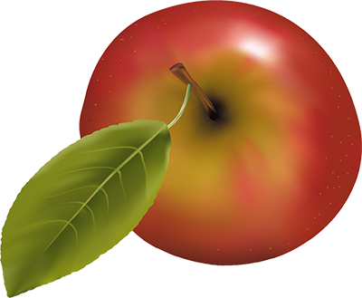

Faithful Fruit Factory
Faithful Fruit Factory is a home grown company that specialize in bringing the best little known fruits from around the world to your doorstep. We first started in the 1960’s with a little warehouse in the San Fernando Valley, and expanded into a nationwide corporation during the next ten years. Now we have factories all over the United States so we can bring expedient service to all our customers.
CEO
Hi, my name is Lee White. I am the CEO of Faithful Fruit Factory. I’ve been working for the factory for over ten years and look forward to helping you the best way I can.
- Lee White
- CEO
- Phone: 555-555-3469
- Cell: 555-555-8739
- Email: lwhite@fffactory.com
Our History
We were founded in the early 1990's by a humble family from the Eastern part of Asia. our company was started by a family who had a passion for citrus fruit. Especially for rare fruit that very little people knew about. They decided to bring these rare fruits to parts of the world that really had not seen and/or tasted these fruits because they did not what anyone to miss out on what they had enjoyed from their youth. They also did not want to leave those delicious fruits behind so they brought them with them to North America. Now all can enjoy the best fruit the way they have their whole lives.
Canvas time
Here are some examples of what we can do with canvas. These are basic examples, and not even scratching the surface of whats possible.
Shapes
Container with gradient drawn in canvas
Images
Click the button above to see to make image bigger below
Transfomations
Image drawn, scaled, and translate in canvas